Estaminet · chanson française · Bruxelles
Goupille Fol
Lumière tamisée, objets chinés, boiseries, des vinyles au plafond et un jukebox qui s'illumine : à deux pas de la Grand-Place, l'estaminet où l'on vient bavarder en écoutant de la chanson française.
Tous les jours de 16 h à 2 h 30
- Ouvert 7 jours sur 7 dès 16 h
- Jusqu'à 2 h 30 chaque nuit
- Un jukebox, des vinyles
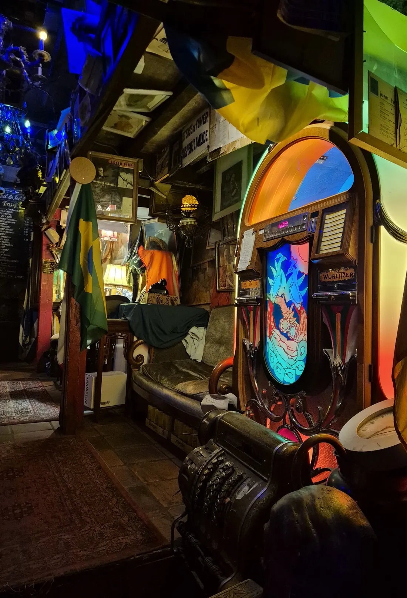
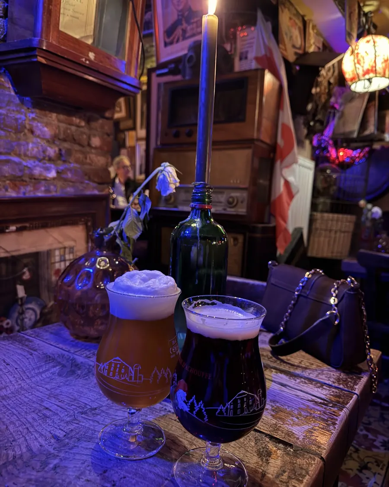
à la bougieLes pièces
On y entre comme dans une histoire
Un couloir tapissé de cadres, de drapeaux et de bustes, une salle au plafond couvert de disques vinyles et de pochettes, un salon de canapés en cuir sous une fresque et un lustre. Chez Goupil, chaque pièce a son décor.
« De nombreuses pièces sont à découvrir, ce qui donne au lieu une véritable personnalité. »Flo, avis Google
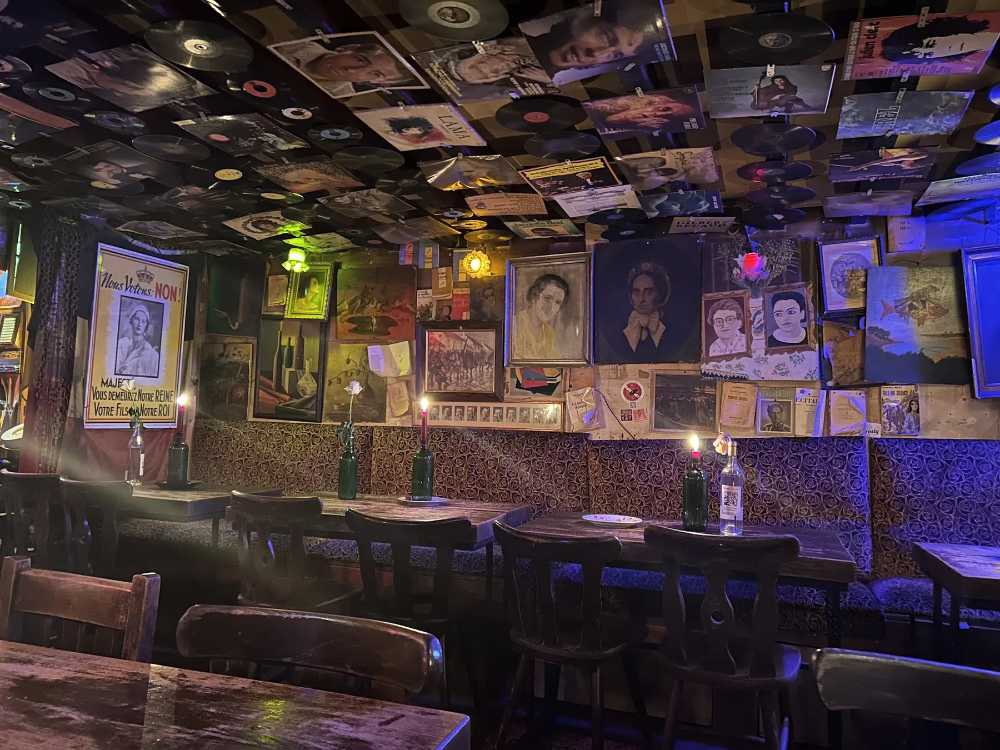
ILa salle aux vinyles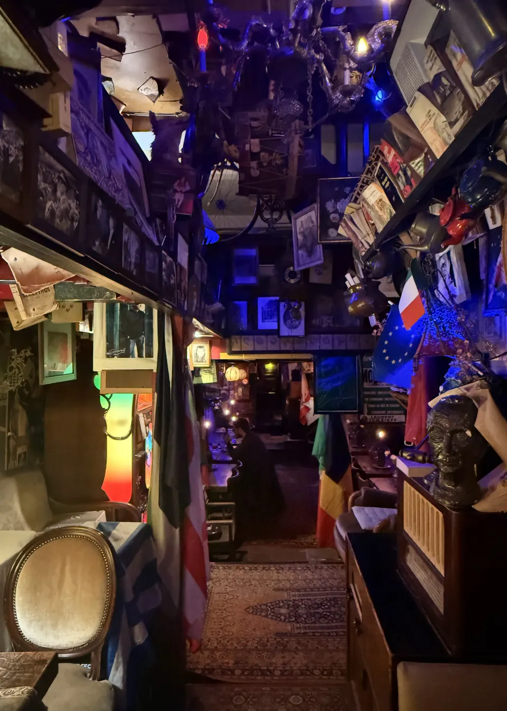
IILe couloir des curiosités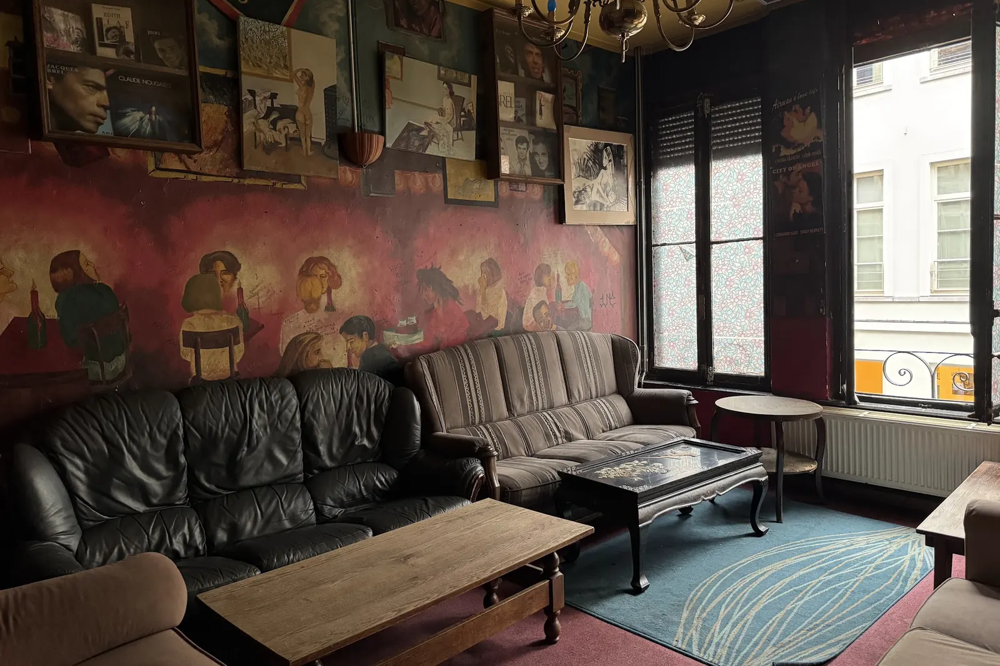
IIILe salon de cuir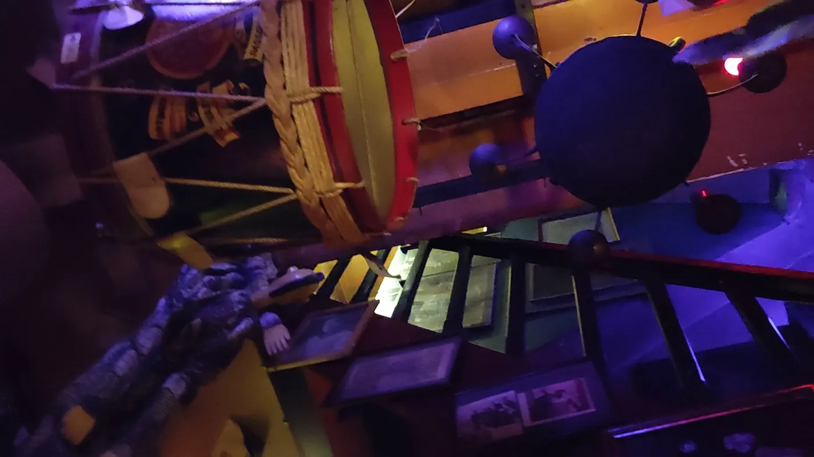
IVLes objets suspendusFaites glisser pour passer d'une pièce à l'autre
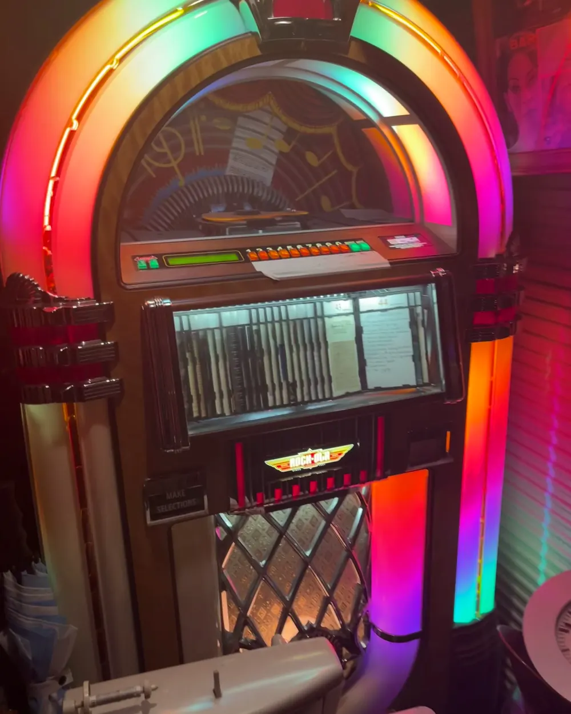
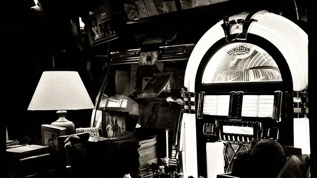
Le Wurlitzer, côté salonLa musique
La chanson française, et un jukebox
« Goupil Le Fol est l'estaminet rêvé pour bavarder paisiblement en écoutant de la bonne chanson française. »Goupil le Fol, sur son site en 2014
Sur le store de la façade en lettres d'or
- F. Leclerc
- Y. Mouloudji
- É. Piaf
- L. Ferré
- C. Nougaro
- S. Gainsbourg
- Barbara
- A. Gaytan
- C. Mauranne
Les noms brodés sur le store rouge, au-dessus de la porte.
Le jukebox ajoutent une touche vintage et participent à l'ambiance, parfaitement en accord avec l'esprit du lieu.Flo, avis Google
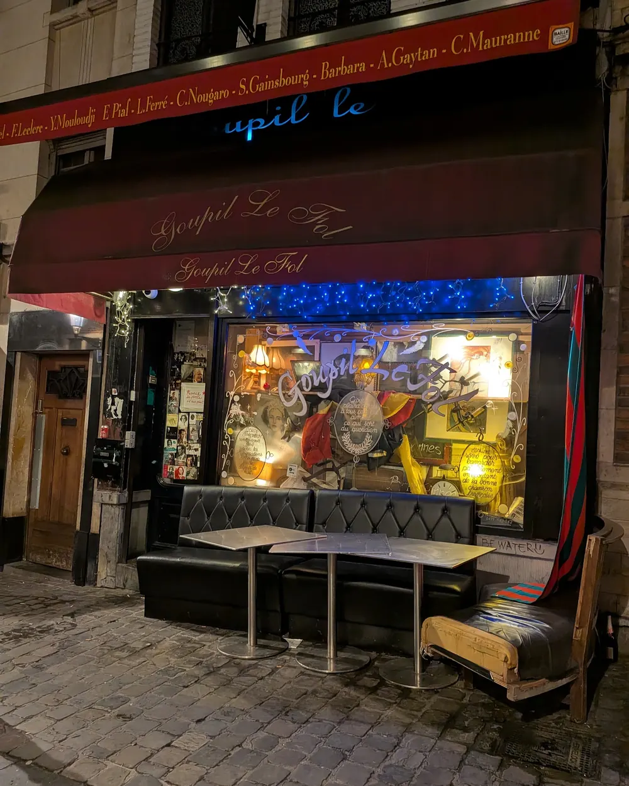
Rue de la Violette, le soirLe soir venu
Sous le store rouge, la porte s'ouvre à 16 h
- Poussez la porteRue de la Violette, à deux pas de la Grand-Place : le store bordeaux, la vitrine allumée, le néon bleu.
- Commandez en entrantOn se fait servir au comptoir dès l'arrivée, puis on s'installe.
Faut se faire servir des l'entrée
Marcelo R., avis Google - Choisissez votre pièceLe couloir, la salle aux vinyles ou le salon de cuir, et l'on reste jusqu'à la fermeture, 2 h 30.
Réserver
Un coin pour toute la bande, gardé d'avance
Un anniversaire, un verre entre collègues, un vendredi entre amis : choisissez le soir, l'heure et le nombre, et votre coin vous attend.
Avis
« Un véritable coup de cœur. »
Ce que les clients écrivent sur Google après une soirée chez Goupil.
Horaires et accès
Chaque jour dès 16 h, jusque tard
| lundi | 16 h – 2 h 30 |
|---|---|
| mardi | 16 h – 2 h 30 |
| mercredi | 16 h – 2 h 30 |
| jeudi | 16 h – 2 h 30 |
| vendredi | 16 h – 2 h 30 |
| samedi | 16 h – 2 h 30 |
| dimanche | 16 h – 2 h 30 |
Les heures après minuit comptent pour la soirée de la veille.
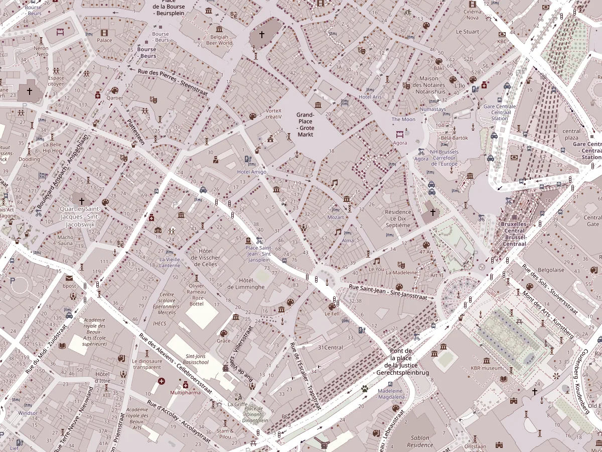
Itinéraire © OpenStreetMap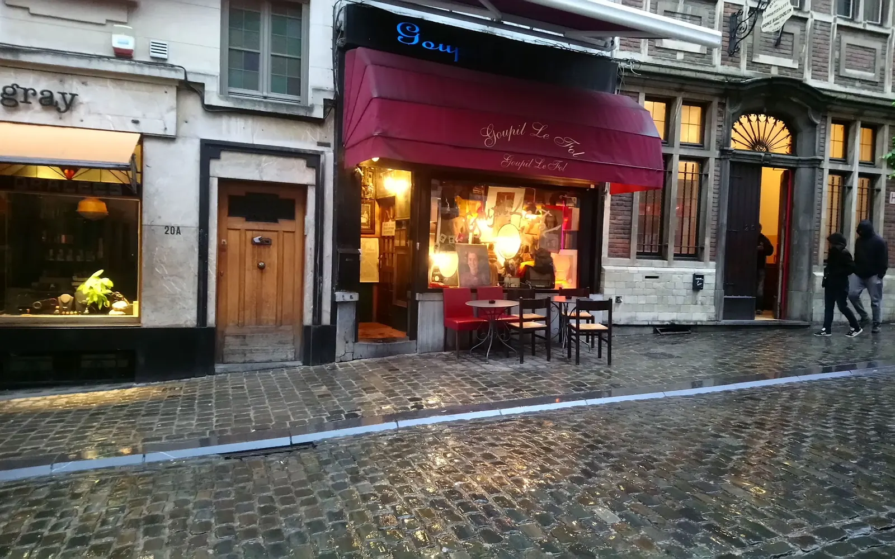
Une question ?
Un groupe, un anniversaire : 02 511 13 96 ou par e-mail. À deux pas de la Grand-Place.